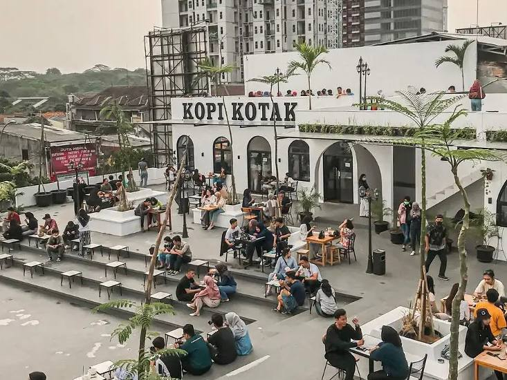
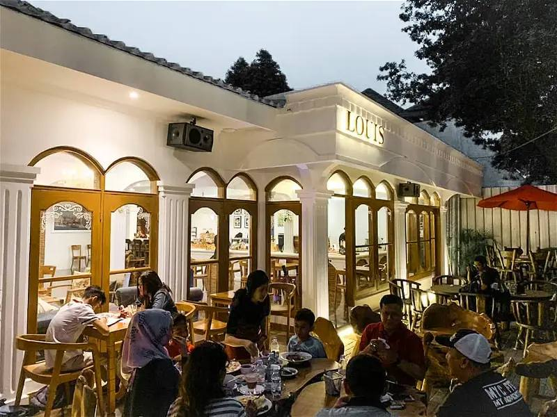
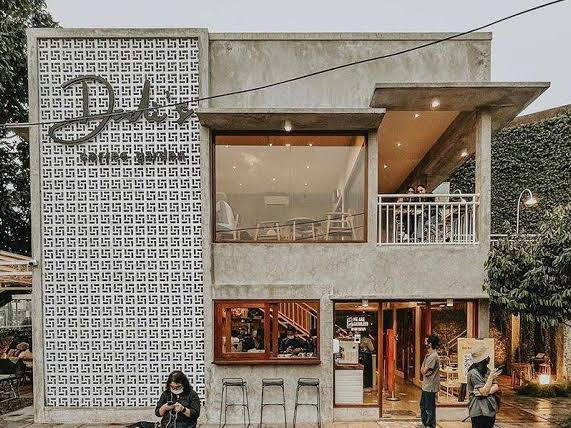
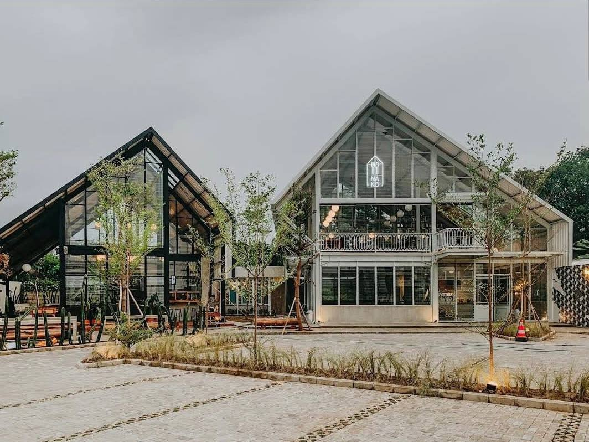
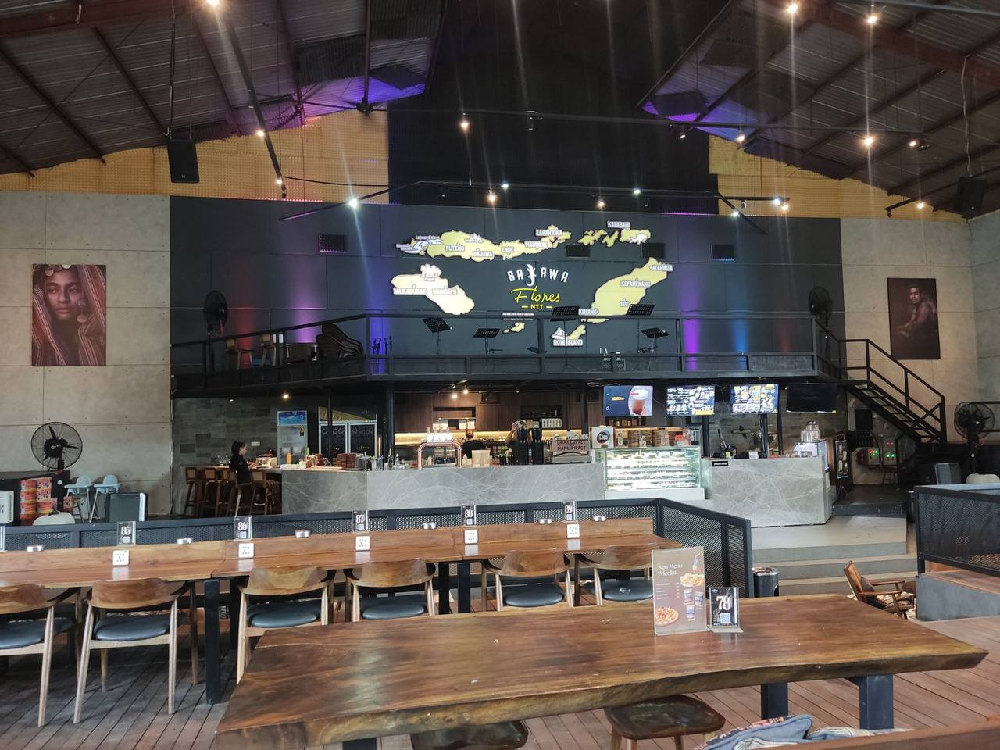

Rekomendasi 5 Cafe Hits dan Cozy di Depok
Cafe atau coffeshop kini menjadi salah satu tempat yang banyak menjamur. Perubahan gaya hidup masa kini, hingga meningkatnya jumlah konsumsi kopi membuat cafe banyak buka di berbagai daerah. Selain itu, fungsi dari cafe sebagai tempat nongkrong pun bergeser. Bukan hanya untuk makan dan bertemu dengan teman-teman, juga kerap dijadikan sebagai lokasi bekerja, mengerjakan tugas, hingga meeting. Untuk kamu yang tinggal di kawasan Depok, kini banyak cafe terdekat yang tak hanya Instagramable, tapi juga nyaman dan dapat kamu manfaatkan untuk bekerja.
Penasaran di mana saja lokasi cafe di Depok yang hits dan nyaman? Berikut daftarnya.
1. Kopi Kotak

Cafe yang berlokasi di Margonda ini memiliki tempat yang luas dan estetik dengan konsep ala Santorini. Didominasi area outdoor, ngopi di sore hari bakal ditemani sunset yang menawan dari atas sini. Cocok, deh, untukmu yang cari cafe rooftop di Depok! Menu kopi yang kerap jadi favorit di antaranya ada Kopi Gula Aren dan Kopi Salted Caramel. Makin lengkap lagi dengan pilihan makanan ringan seperti aneka roti bakar, french fries, singkong goreng, nachos, dan lainnya.
2. Louis Cafe

Louis Cafe cocok banget untuk kamu yang ingin nongkrong beramai-ramai dengan teman, keluarga, atau rekan kerja. Sebab, cafe ini punya ruang yang cukup luas dan tentunya juga nyaman. Mengapa cafe ini bisa senyaman itu karena awalnya tempat ini adalah rumah tinggal yang disulap menjadi tempat kopi yang sangat estetik. Nggak heran kamu akan melihat para pengunjung yang berlama-lama di Louis Cafe ini, deh. Pilihan kopi yang disajikan oleh Louis Cafe pun sangatlah beraneka ragam, mulai dari americano, latte, cappuccino dan affogato. Ada juga minuman non-coffeenya, yaitu cokelat, lemon tea, dan choconut. Mau cari makanan? Tenang, di sini juga tersedia aneka cemilan, seperti kroket, risoles, dan croissant almond.
3. Dadi's Coffee Garden

Rekomendasi cafe di Depok lainnya yang wajib kamu kunjungi adalah Dadi's Coffee Garden. Cafe ini berlatar taman dengan desain industrialis nan minimalis. Buat kamu yang suka tema retro, tempat satu ini cocok banget untuk kamu jadikan tempat berfoto. Untuk area makannya, kamu bisa memilih di bangian indoor yang disekat dengan kaca-kaca atau memilih area outdoor dengan nuansa taman yang lengkap dengan sangkar burung besar. Dadi's Coffee Garden punya menu croffle legendaris yang sudah dibicarakan banyak pengunjungnya. Untuk menemanimu menyantap croffle, ada beragam frappe yang bisa kamu pilih, mulai dari Dadi's signature latte frappe, hingga shortbread cookie frappe.
4. Kopi Nako

Kopi Nako Depok dikenal sebagai salah satu cafe terdekat dengan tampilan yang Instagramable dan siap menjadi tempat nongkrong favorit baru di Depok. Mengusung tema industrial minimalis, area Kopi Nako Depok didominasi material kaca yang eye catching dan unik. Area outdoor-nya pun adem dan bikin betah untuk nongkrong berlama-lama di sana. Sesuai dengan namanya, Kopi Nako Depok memiliki banyak varian kopi yang wajib kamu coba. Mulai dari es kopi susu pandan, hingga es kopi duren yang menjadi menu andalannya.
5. Kopi Bajawa Flores

Seperti namanya, Kopi Bajawa Flores merupakan cafe milik putra putri asli Nusa Tenggara Timur. Di sini kamu bisa menikmati kopi sampai makanan berat yang bervariasi. Mulai dari pasta, burger, toast, sampai pizza, semua tersedia di Kopi Bajawa Flores. Berbeda dengan kafe lainnya, kamu bisa merasakan kopi langsung dari Flores yang tentunya kualitasnya berbeda dari kopi biasanya.
Itulah tadi 5 rekomendasi cafe di Depok yang Instagramable untuk nongkrong dan bekerja. Mana yang ingin kamu kunjungi di minggu ini?